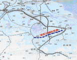
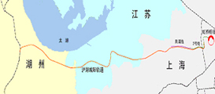

预控沪湖城际轨道城区站位与郊区线位研究 ( 2008年03月31日 )
预控沪湖城际轨道城区站位与郊区线位研究</STRONG>
研究时间：2007年9月1日至10月30日</P>


一、研究背景<BR> 随着长三角区域一体化的加快，地处宁湖杭发展带和沿太湖生态服务带交汇处的湖州已经逐步成为了沿海地区产业转移和人口转移的重点城市之一，融入上海的进程不断加快，迫切需要建设通往上海的高容、快捷、安全的城际轨道。<BR>二、研究内容<BR>（一）建设上海西向城际轨道的必要性<BR> 建设沪苏湖发展轴将有助于促进长三角地区均衡发展。长三角区域发展总体布局框架提出了“一核六带”的发展方向，环太湖和环杭州湾地区是长三角的两大“工业园”，沪宁、沪杭发展轴是联系这两大园区的较强的发展轴。随着长三角地区的网络化态势越来越明显，优势发展带的影响范围也更广阔，相对较弱的地区也正在形成新的发展轴，沪湖连线正处于沪宁、沪杭两轴之间，需要形成一条新的发展轴来带动沿线区域均衡化发展的目标。<BR> 开辟第三条东西向轴线，缓解沪宁、沪杭通道压力。目前，长江三角洲地区东西向的交通线主要集中在沪宁和沪杭两条轴线，规划建设沪苏湖城际轨道，与318国道、申苏浙皖高速公路一起，将共同开辟上海向西辐射的第三条交通轴线，将可以适当分担沪宁、沪杭通道的交通压力，优化长三角城际交通网络。<BR> 填补太湖南岸轨道交通缺口，形成环太湖交通圈。环太湖的苏州、无锡、常州、湖州和嘉兴5个地级城市分属两省，实现绕太湖交通圈对支撑长三角发展具有积极意义。而目前太湖东西北三侧均已规划或建设了轨道交通线路，唯有太湖南岸区域仍是个缺口，建设沪苏湖城际轨道可以填补这一缺口。<BR> 增加上海西向客运通道，提供快速通勤服务。根据已有规划，上海向西连接湖州将建设沪乍嘉湖铁路，东起浦东铁路漕河泾，向西连接嘉兴乍浦，止于湖州南站，规划为单线，但该铁路以联系上海港和乍浦港的货运功能为主、兼顾客运。随着上海对中西部经济发展辐射作用增强，货运量将有较大的增长，更加不适宜开行高速城际列车。同时，沪乍嘉湖铁路总里程约200公里，而上海至湖州直线距离为130公里，将有70公里绕行距离，客流主方向与线路也不一致。因此，需要新辟城际通勤轨道客运线，与公路共同构筑复合型的运输通道，与其他交通设施共同打造“60分钟150公里通勤交通圈”。<BR>（二）预控进入虹桥综合交通枢纽的站位
通勤客流特征比较明显，需要提供良好换乘条件。根据相关规划，沪湖城际轨道建成后将承担三部分的城际客流，一是沪湖间城际客流，为主要客流方向，二是苏州与沪湖间客流，三是嘉兴与沪湖间客流。初步预测，到2020年，沪湖间的全日城际客流量将达到8－10万人次，其中，7：00－10：00和15：00－18：00的通勤客流均将占到25％左右，通勤特征比较明显。为此，需要为通勤客流创造良好的换乘条件，进入虹桥综合交通枢纽是优先考虑的选择。<BR> 引入虹桥交通枢纽，至少预控2股轨道。上海城区西侧的虹桥枢纽作为联系上海和江苏、浙江的重要综合性交通枢纽，要实现航空、高速铁路、城际轨道、市域轨道和地面交通的有机组合、高效换乘。在初步考虑预留的铁路30股道中，需要至少预控2股轨道给沪湖城际轨道使用。<BR>（三）预留青浦宽幅多线复合走廊<BR> 衔接市域轨道2号线，实现快速城际服务。根据现有规划，上海市域轨道2号线将西延伸至青浦区徐泾镇，沪湖城际轨道可与其直接联系起来，甚至有可能与规划的苏州市域轨道2号线也联系起来，为长三角区域之间的通勤客流提供更为快速的服务，因此，需要为轨道站点的衔接换乘创造条件。<BR> 利用轨道20号线线位，预留青浦宽幅多线通道。沪湖城际轨道在青浦境内可充分利用轨道20号线的线位，分别服务于沪湖沿线城镇和青浦郊区的通勤客流，实现同一通道运行，有效提高客运效率，节约建设用地规模。因此，需要考虑利用已有规划线位，预留沪湖轨道的用地空间。<BR>


地址：上海市静安区铜仁路331号11楼 邮编：200040 Web:site:www.scctpi.sh.cn
电话：（021）62477711 62890464 传真：（021）62472386 62892787
 沪ICP备11003425号-4
沪ICP备11003425号-4